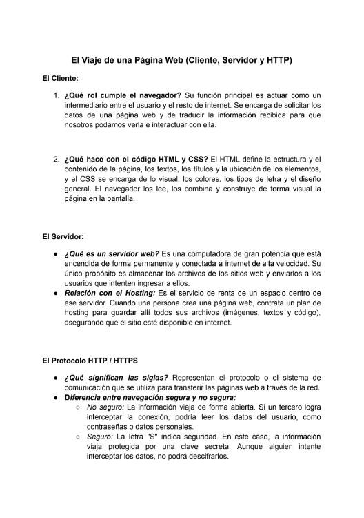
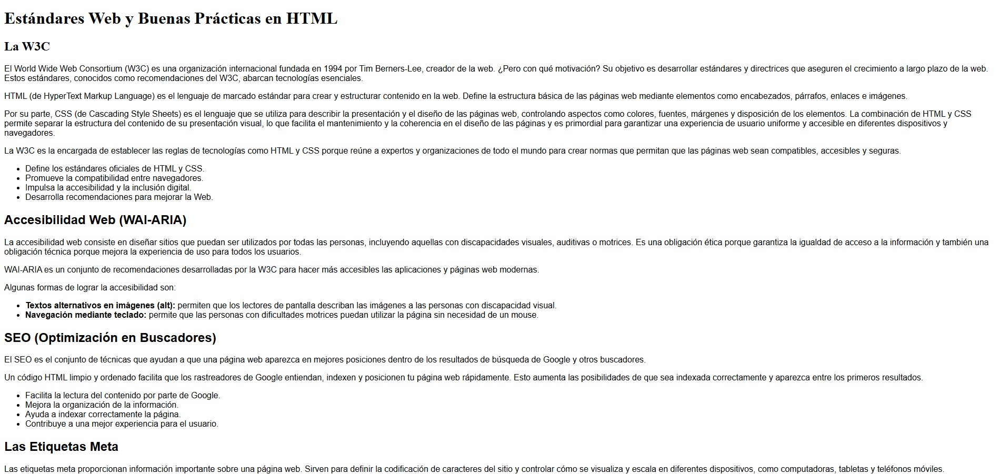
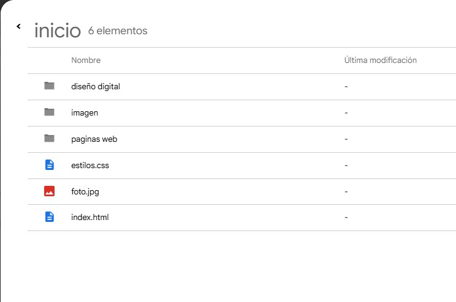
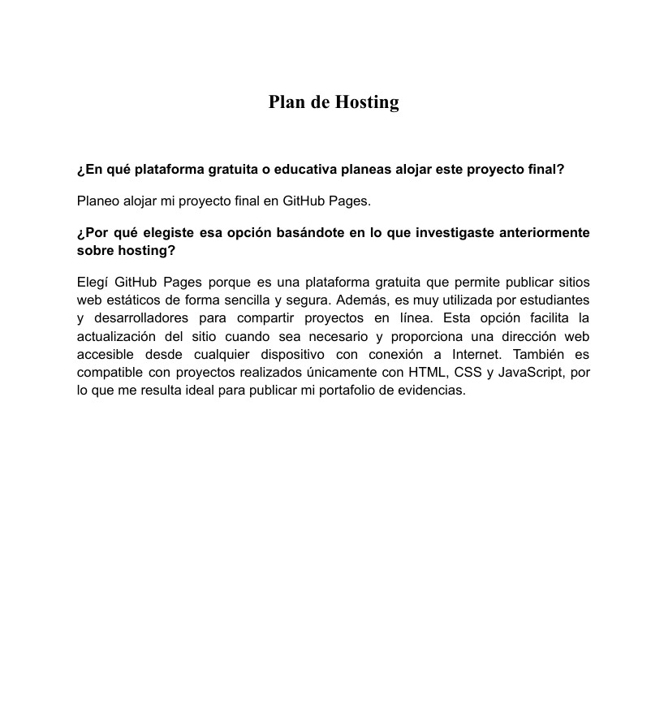

Investigación Hosting
La actividad tuvo como propósito investigar qué es el hosting o alojamiento web, así como conocer el proceso para publicar un sitio web en Internet y los servicios que ofrecen las empresas de hosting. Para ello, se consultaron diferentes fuentes de información relacionadas con el desarrollo web y la administración de sitios en línea. Durante la investigación se comprendió que el hosting es un servicio indispensable para almacenar los archivos de una página web y permitir que los usuarios puedan acceder a ella desde cualquier lugar. También se identificaron los pasos básicos para publicar un sitio web y las principales herramientas y servicios que brindan los proveedores de hosting. Gracias a esta actividad se fortalecieron los conocimientos sobre el funcionamiento de los sitios web y la importancia del hosting para mantener una página disponible, segura y accesible en Internet.


El Viaje de una Página Web y Diagrama de flujo
La actividad tuvo como objetivo comprender cómo funciona la comunicación entre el navegador, Internet y el servidor para que una página web pueda mostrarse correctamente. Para ello, se investigaron los conceptos de cliente, servidor, protocolo HTTP/HTTPS y el proceso de petición y respuesta. Durante la actividad se aprendió que el navegador interpreta los archivos HTML y CSS para mostrar una página web, mientras que el servidor almacena y envía esos archivos cuando son solicitados. También se comprendió la importancia de HTTP y HTTPS para la transferencia segura de información en Internet.
Además, se elaboró un diagrama de flujo para representar el recorrido que realiza una petición web desde el cliente hasta el servidor y de regreso al usuario. Gracias a esta actividad se reforzaron los conocimientos sobre el funcionamiento básico de la web y la arquitectura cliente-servidor.

Las Reglas de Internet
La actividad tuvo como objetivo conocer las principales normas y buenas prácticas del desarrollo web, investigando temas como la W3C, la accesibilidad web, el SEO y las etiquetas meta de HTML. Durante la actividad se aprendió la importancia de crear páginas web siguiendo estándares que permitan su correcto funcionamiento, accesibilidad para todos los usuarios y mejor posicionamiento en los buscadores. Además, se comprendió la función de algunas etiquetas meta básicas utilizadas en HTML. Gracias a esta actividad se reforzaron los conocimientos sobre el desarrollo web y la importancia de crear sitios organizados, accesibles y optimizados.


Auditoría y Plan de Lanzamiento al Hosting
La actividad tuvo como objetivo revisar y organizar el proyecto web para prepararlo antes de subirlo a un servicio de hosting. Se verificaron los nombres de archivos y carpetas, las rutas de enlaces e imágenes, y se eligió una plataforma adecuada para publicar el sitio. Finalmente, se comprimió el proyecto en un archivo .zip. Gracias a esta actividad se comprendió la importancia de mantener una correcta organización para garantizar el buen funcionamiento de una página web en Internet.